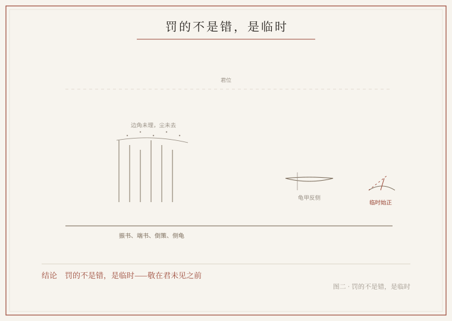

曲礼下 · 二·十七 · 第 140 课
在君面前才抖动文书去尘、才理顺文书边角，有罚；在君面前才把蓍策倒过来、把龟甲翻过来，也有罚。注「臣不豫事，不敬也」。
说什么事：振书、端书于君前有诛，倒策、侧龟于君前有诛。
落在哪一层：仪。论「预备」这件事。
为何编在此位：上节论口上之禁，此节论手上之事。言与事，皆在君前受检验。
【经】振書、端書於君前有誅，倒筴、側龜於君前有誅。
【注】臣不豫事，不敬也。振，去塵也。端，正也。倒，顛倒也。側，反側也。皆謂甫省視之。
【疏】「振书」者，拂去尘也。书，簿领也。端，正也。诛，责也。臣不豫慎，若将文书簿领於君前，临时乃拂整，则宜诛责也。「倒策、侧龟於君前有诛」者，倒，颠倒也。侧，反侧也。龟策，君之卜筮所须也。不预周正，而来在君前方颠倒反侧齐正，则有责罚也。
振书 注「振，去尘也」。抖动以去尘。
端书 注「端，正也」。理齐其边角。
簿领 疏语。文书簿册之类。
倒策 策即蓍策。倒，上下颠倒。
侧龟 侧，反侧。龟甲翻覆未正。
甫省视 注「皆谓甫省视之」。疏「甫者，始也，谓不豫整理，今于君前始正之」。
诛 注疏「责也」。是责罚，非刑杀。
在国君面前才抖文书去尘、才理齐文书，有罚；在国君面前才把蓍策颠倒过来、把龟甲翻正，有罚。
此节罚的不是错误，是「临时」。当着君的面才整理，等于宣告自己先前没准备。礼在此把「预备」写成了一条可罚之事。
第一层 不豫事即不敬 注六字是全节之纲。敬不在君前的那一瞬，在君未见之前。
第二层 书与龟策并举 一是文书，一是卜筮之具。日常之务与通神之器，同一标准。
第三层 诛是责 注「诛，罚也」一类。礼书中的「诛」多指责罚，不可径读为刑。
第四层 与「振书」相对者为「端书」 一为去尘，一为理边。二者皆可事前为，故皆不可君前为。
与今日何干 汇报时才打开文件、才找数据、才连投影，与「君前振书」同罪。今无诛，然观者心里自有罚。
| 左 | 右 |
|---|---|
| 振书于君前 | 拂尘当在未见之前 |
| 端书于君前 | 理边当在未见之前 |
| 倒策于君前 | 蓍策颠倒，临时始正 |
| 侧龟于君前 | 龟甲反侧，临时始正 |
| 臣不豫事 | 不敬 |
| 诛 | 责也，非刑 |
画一方案前立着一束简册与一枚龟甲：简册的边角参差未理，册上浮着一层极淡的尘点；龟甲上下倒置、腹背反侧。案侧画一只手的剪影正伸向简册（只画手与腕），手与简册之间画一道短斜线并加一撇，示意为时已晚。案后一道极淡的横线示意君位，不画人。不写文字。赭色只用在手与简册之间那道短斜线上。
